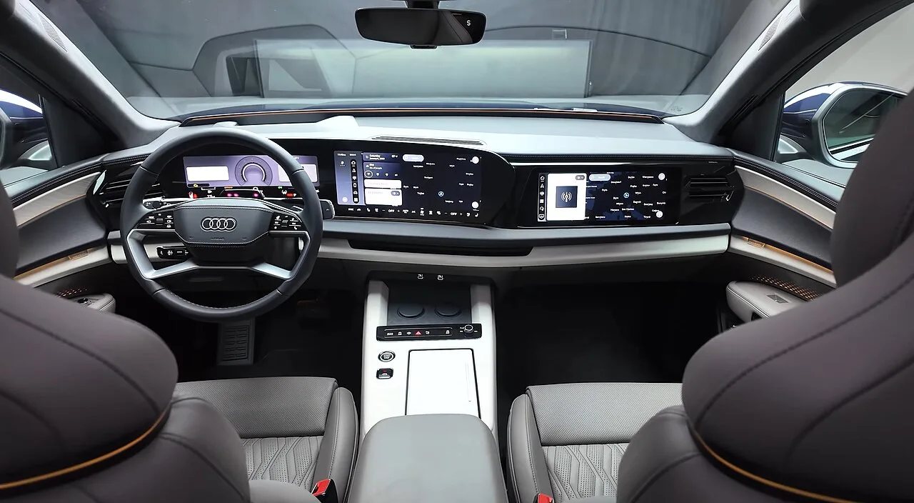
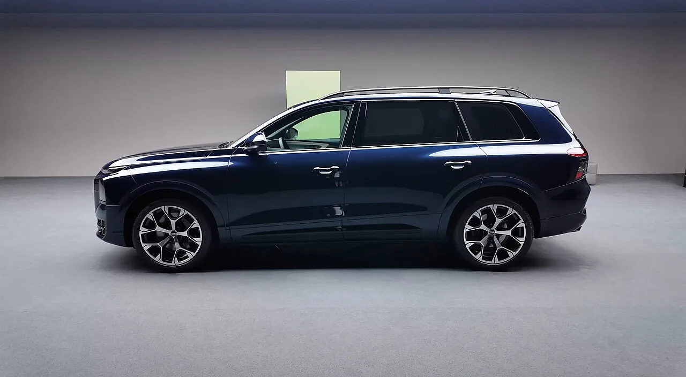
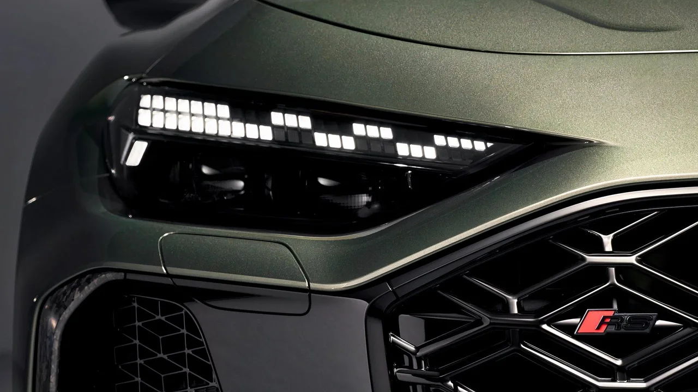

▲ 정재형이 운전면허 취득 직후 초청받은 아우디의 신형 플래그십 SUV 'Q9' ⓒ Audi
초보 운전자의 '첫 상처'는 이렇게 찾아왔다. 가수 겸 작곡가 정재형이 9월 28일 자신의 SNS에 아우디 차량 휠 사진을 올렸다. 검은색 휠 가장자리가 길게 긁혀 도장이 벗겨진 모습이었다.
사진 위에는 눈물을 쏟는 이모티콘과 함께 "긁었어!!! 으아!!!"라는 문구가 적혀 있었다. 56세에 생애 첫 운전면허를 딴 지 불과 두 달여 만의 일이다.
1. 무슨 일이 있었나 — SNS에 올라온 '긁힌 휠' 사진
정재형은 28일 자신의 SNS에 차량 바퀴 사진을 게재하며 뜻밖의 운전 근황을 전했다. 공개된 사진에는 검은색 차량 휠 가장자리가 길게 긁혀 도장이 벗겨진 모습이 담겼다. 휠 스포크에는 'Audi Sport' 로고가 선명하게 새겨져 있어 아우디 차량임을 짐작게 했다.
📍 정확한 차종은 확인되지 않았다
다만 공개된 사진만으로 정확한 차종까지 확인되지는 않는다. 아우디 고성능 및 S라인 계열 여러 모델에 'Audi Sport' 휠이 적용되는 만큼, 이 사진만으로 차종을 특정하기는 어렵다는 것이 당초 보도의 설명이다.
친구들의 반응은 동정보다 놀림에 가까웠다. 가수 이적은 앞서 정재형이 면허를 처음 공개했을 때 "그냥 장롱에 넣어놔라. 장롱에 넣어놓으면 무사고"라고 농담을 던진 바 있는데, 이번 휠 스크래치 소식에 그 말이 다시금 회자되는 분위기다.
2. 56세에 딴 첫 면허, 두 달의 기록
정재형은 지난 7월 56세의 나이에 생애 첫 운전면허를 취득해 화제를 모았다. 반려견 해듬이와 여행을 가고 싶어 면허에 도전했다는 그는 필기·기능·도로주행 시험에 한 번에 합격했고, 특히 기능시험에서는 100점을 받았다. 합격 직후 그는 "수능 본 것보다도 더 기뻤다"며 벅찬 소감을 전했다.

▲ 최근 출시되는 아우디 신차는 대형 디지털 클러스터와 다중 터치스크린을 갖춰, 초보 운전자에게는 적응이 필요한 구성이 많다 ⓒ Audi
이후 유튜브 채널 '요정재형'을 통해서도 면허증을 공개하며 "저 운전 꽤 잘한다"고 자신감을 보였지만, 30년 지기 이적은 "우리의 도로는 한층 더 위험해졌다", "항상 방어운전 하시고 어디서 뭐가 튀어나올지 모르니까 어떡하니"라며 걱정 섞인 농담을 던졌다. 이후 가수 엄정화가 정재형이 직접 차를 몰고 자신을 데리러 온 모습을 공개하며 "역사적인 순간이다. 정재형이 운전을 한다", "이런 날이 오네"라고 놀라워하기도 했다.
3. 면허 따자마자 날아간 뉴욕, 아우디 Q9 공개 현장
공교롭게도 정재형과 아우디의 인연은 이번이 처음이 아니다. 면허를 취득한 지 한 달이 채 지나지 않은 8월, 그는 자신의 유튜브 채널에서 "면허시험 붙자마자 많은 분들이 좋아해 주시는데, 뉴욕 아우디 Q9 글로벌 최초 공개 자리에 초대를 받았다"고 밝혔다. 이 뉴욕 일정에는 30년 지기 이적이 동행했다.
✅ 아우디 Q9, 어떤 차인가
· 아우디 브랜드 역사상 최초의 풀사이즈(초대형) SUV, 기존 대형 SUV Q7보다 차체가 더 큼
· 2026년 7월 29일(현지시간) 미국 뉴욕에서 월드 프리미어로 세계 최초 공개
· 고성능 버전 'SQ9'은 트윈터보 V8 가솔린 + 마일드 하이브리드, 일반형은 V6 기반 플러그인 하이브리드로 구성
· 2열 캡틴 체어와 성인 탑승이 가능한 풀사이즈 3열 좌석 제공
· SQ9 트림은 국내 기준 1억 8천만 원 이상으로 예상되며, BMW X7·벤츠 GLS와 직접 경쟁

▲ 아우디 Q9의 대형 알로이 휠. 정재형이 SNS에 공개한 휠과는 다른 차종이지만, 최근 아우디 SUV 라인업 전반에 적용되는 스포크 디자인 감각을 보여준다 ⓒ Audi
아우디 Q9의 공식 소개 자료는 아래에서 확인할 수 있다. 아우디 Q9 소개 기사 바로가기
4. 사진 속 'Audi Sport' 휠, 정확히 무슨 의미일까
정재형이 공개한 사진에서 눈길을 끈 것은 휠 스포크에 새겨진 'Audi Sport' 문구다. 다만 이 배지 하나만으로 그의 차량이 고성능 모델이라고 단정하기는 어렵다.
| 등급 | 의미 |
|---|---|
| A·Q 일반 모델 | 기본 라인업, 고성능 엔진이나 전용 휠 패키지 없음 |
| S라인(S-Line) 패키지 | 스포츠 서스펜션·외관 장식·전용 휠 등 디자인·주행감 강화 패키지, 엔진은 일반형과 동일한 경우가 많음 |
| S 모델 | 'Sovereign Performance'를 뜻하는 고성능 라인, 전용 엔진·서스펜션 탑재 |
| RS 모델 | 독일어 'RennSport(레이싱 스포츠)'에서 유래, 아우디 최상급 하드코어 고성능 라인 |
📍 'Audi Sport' 휠 = RS 차량은 아니다
'Audi Sport'라는 문구가 새겨진 디자인 휠은 RS 모델 전용이 아니라, S라인 패키지가 적용된 A·Q 시리즈 일반 모델에도 선택 사양으로 폭넓게 제공된다. 즉 정재형이 공개한 사진 속 차량이 RS나 S 고성능 모델인지, 혹은 S라인 패키지를 적용한 일반 모델인지는 이 사진만으로 확정할 수 없다.

▲ 아우디 RS 모델에는 그릴에 별도의 'RS' 배지가 부착된다. 'Audi Sport' 휠 문구만으로는 이런 최상급 고성능 모델인지 구분할 수 없다 ⓒ Audi
5. 초보 운전자의 휠 스크래치, 이렇게 대처하자
정재형의 사례처럼 면허 취득 초기에는 주차나 좁은 골목에서 휠 연석 마찰(커브 러빙)로 인한 스크래치가 흔하게 발생한다. 값비싼 수입차일수록 복원 비용 부담도 커지는 만큼, 미리 알아두면 좋은 대응법을 정리했다.
✅ 휠 스크래치 발생 시 체크리스트
· 도장만 벗겨진 경미한 스크래치는 휠 전문 도색(휠 리페어)으로 복원 가능, 통상 휠 1개당 수만 원~십수만 원대
· 휠 자체가 찌그러지거나 크랙(균열)이 생겼다면 안전과 직결되므로 반드시 교체 또는 전문 복원 업체 진단 필요
· 타이어 옆면까지 손상됐다면 타이어 상태도 함께 점검 — 편마모나 공기압 이상 동반 가능
· 예방을 원한다면 휠 림가드(고무 보호테) 부착이나, 주차 시 연석과의 거리를 넉넉히 두는 습관이 도움
· 보험 처리를 고려한다면 자기차량손해담보(자차보험) 가입 여부와 할증 기준을 먼저 확인할 것
6. 요약
정재형이 SNS에 공개한 아우디 휠 스크래치 사진은 56세에 면허를 딴 그의 '초보 운전자다운' 에피소드였다. 휠에 새겨진 'Audi Sport' 로고 때문에 궁금증을 자아냈지만, 이 배지만으로는 정확한 차종이나 고성능 여부를 단정할 수 없다.
정재형과 아우디의 인연은 이번이 처음이 아니다. 그는 면허 취득 한 달여 만인 8월, 절친 이적과 함께 뉴욕에서 열린 아우디 브랜드 최초의 플래그십 SUV 'Q9' 글로벌 공개 행사에 초청받은 바 있다.
초보 운전자의 휠 스크래치는 드문 일이 아니다. 경미한 도장 손상이라면 휠 리페어로 비교적 저렴하게 복원할 수 있지만, 휠 변형이나 크랙이 의심된다면 안전을 위해 반드시 전문가 진단을 받아야 한다.